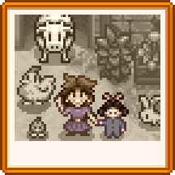
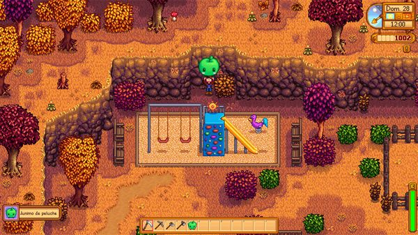
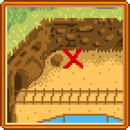
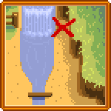
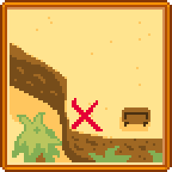
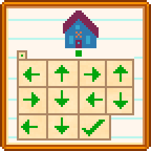
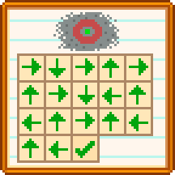

Notas Secretas:
Las Notas Secretas son notas coleccionables que se pueden desbloquear yendo a la Parada de autobús desde La granja durante el Invierno entre las 6am y las 4pm. El jugador verá una escena en la que un "Tipo sombrío" (que probablemente sea Krobus) se sobresalta y huye. Después de ver la escena, se agrega la misión "Un misterio invernal" al diario del jugador.
Los pasos del Tipo sombrío conducen a un arbusto al lado del patio de juegos, a la izquierda del Centro Cívico. Si el jugador interactúa con el arbusto, el Tipo sombrío saldrá de él, se disculpará por el robo, le dará al jugador una Lupa y luego huirá. La Lupa brinda al jugador la capacidad de encontrar notas secretas mientras cava, tala árboles, mina, pesca o mata monstruos.
Una vez encontrado, se puede leer una Nota secreta seleccionándola en la fila superior del inventario y haciendo clic con el botón derecho (como si consumiera alimentos). Esto agregará la nota a la colección del jugador y activará la pestaña de colección de Notas Secretas en el menú del jugador.
Algunas notas enumerarán los regalos "Amados" para ciertos personajes, mientras que otros tendrán imágenes que representan soluciones de rompecabezas. Leer las notas que indiquen preferencias de regalos añadirán los regalos al Registro de Regalos del aldeano en la pestaña Social del menú del jugador.
Las notas secretas se pueden regalar, pero todas son universalmente odiadas.
Generación de Notas secretas
| El "Tipo sombrío" después de interactuar con el arbusto y hablar con nuestro personaje |
|---|
 |
| Nota secreta |
|---|
| |
La siguiente tabla enumera las diferentes acciones que pueden generar una nota secreta.
La columna "Probabilidad" indica las probabilidades de que el juego intente generar una nota secreta. Cuando se hace tal intento, el juego realiza una comprobación adicional para ver si tiene éxito, basándose en el número de notas del tipo apropiado (restos de un diario en la Isla Jengibre, notas secretas normales en otros lugares) que el jugador ya ha encontrado. Si se han encontrado todas las notas, la comprobación falla. En caso contrario, la probabilidad de éxito es una función lineal del número de notas encontradas, con un 80% de probabilidad de éxito si no se ha encontrado ninguna nota y un 12% de probabilidad de éxito si se han encontrado todas menos una.
| Actividad | Probabilidad |
|---|---|
| Hierbajos | 0.9% |
| Monstruos | 3.3% |
| Talar Árboles (Cada golpe de hacha) | 0.5% |
| Pescar | 8% para reemplazar la basura |
| Lugar de artefacto | 11% (Después de los chequeos de artefactos y de recolección invernal) |
| Piedras | 0.75% |
| Grupo de recursos* | 5% |
| Cultivo gigante | 100% |
*Los grupos de recursos son: Tocón grande, Tronco grande, Meteorito y Roca (dentro y fuera de Las minas).
Notas secretas
Nota secreta #1
Es una página del diario de Abigail.
"Cosas que me gustan: el aroma de las calabazas talladas, tener una amatista debajo de la almohada, pastel de chocolate, la emoción de la anguila picante y la tarta de moras de mamá (¡me gusta comer!)"
Nota secreta #2
Es la lista de compras navideñas de Sam.
Los favoritos de cada uno:
- Sebastian: Lágrima congelada, Sashimi
- Penny: Esmeralda, Amapolas
- Vincent: Uvas, Caramelos de grosellas
- Mamá: Perca crujiente, Tortitas
- Papá Risotto, Avellanas tostadas
- Míos: Cactus, Bollito de arce, Pizza
Nota secreta #3
Es la letra de Leah.
Mi idea de una cena perfecta sería una ensalada, queso de cabra, trufas y vino. Y de postre, un Muffin de amapola. ¡Ñam! Si alguien me ofreciese una de estas cosas, me derretiría.
Nota secreta #4
Es una nota de Maru.
¡Piezas que aún me faltan para completar mi mayor invento hasta la fecha!
- Lingote de oro
- Lingote de iridio
- Pila
- Diamante
- Fresas
Nota secreta #5
Es la letra de Penny:
¡Quiero darle a todo el mundo algo que le guste!
- Mamá: Chirivías, Ñames glaseados, ¡NADA DE CERVEZA!
- Jas: Rosa hada, Pudin de ciruela
- Vincent: Pastel rosa, Uvas
- Sr. Mullner: Puerro, Setas salteadas
- Abuelita Mullner: Remolacha, Tulipán
Nota secreta #6
Pedidos especiales del Salón Fruta Estelar
- Alcalde Lewis: Botín otoñal (Doble de pan con mucha fibra)
- Marnie: Tarta de calabaza (¡Con extra de crema!)
- Demetrius: Estofado de judías (Bien picante)
- Caroline: Taco de pescado (¡Con el triple de salsa! Será mejor ponerle extra de servilletas...)
Nota secreta #7
Es una página del diario de alguien...
... Apenas hay un puñado de solteros mayores en el pueblo... ¡y ninguno es perfecto! Harvey es muy nervioso y debilucho, pero sé que sería un marido fiel y entregado. Le gustan el Café y los Pepinillos.
Elliott es un poco cursi y melodramático, pero tiene un buen mentón. Le gustan las Tartas de Cangrejo y las Granadas.
Shane es un caos y antisocial. Pero creo que su exterior duro es un mecanismo de defensa, para ocultar su dulzura al mundo. Le gusta la Cerveza, la Pizza, y los pimientos.
Nota secreta #8
Para Haley y Emily:
¡Espero que estéis bien! Os hemos enviado vuestros regalos favoritos: Pastel rosa y Girasoles para Haley, Gemas y Lana para Emily.
-Con cariño, Mamá y Papá
Nota secreta #9
Dieta de entrenamiento de fuerza de Alex:
- Desayuno inglés
- Banquete de salmón
(Le he llegado a coger cariño a esta comida... ¡noto las proteínas!)
Nota secreta #10
Alguien te espera en el nivel 100 de la caverna calavera...
Detalles:
Leer la Nota Secreta #10 añade la misión "Nota críptica" al diario. Para completar la misión, alcanza el nivel 100 de la Caverna Calavera. Una vez allí, se reproducirá una escena, durante la cual Señor Qi felicitará al jugador por alcanzar el nivel 100 utilizando 10 o menos escaleras o le dirá que es "inteligente" pero no "honorable" por utilizar 11 o más. En cualquier caso, él te recompensa con una "Leche de serpiente de iridio", que aumenta de forma permanente tu Salud en 25.
Error: Bajo circunstancias que no están claras, es posible obtener la Nota Secreta #10 y luego leerla (en el mismo día de juego), sin embargo los archivos de partidas guardadas no registran que fue recibida, ni leída, y la búsqueda no se añade al Diario. Es posible que el juego se comporte como está diseñado la próxima vez que el jugador obtenga la Nota Secreta #10.
Nota secreta #11
Nota secreta #12
En días con suerte, he llegado a encontrar cosas muy interesantes en la basura.
A veces te encuentras el tradicional plato del día en el Salón... ¡y suele estar fresco todavía!
Para el postre, echo un vistazo al cubo de los Mullner, ya que suelen tener galletas.
Para los tesoros, reviso los cubos de la Herrería y el Museo.
Nota secreta #13
Las doce en punto. Último día de la temporada. Revisa el arbusto sobre el parque infantil.
Solución
A las 12:00 p. m del día 28 de cualquier temporada, interactúa con el arbusto ubicado sobre el patio de juegos para obtener un Junimo de peluche.
Nota secreta #14
Escondí algo detrás del centro cívico.
Solución
Detrás del Centro Cívico, oculto por el techo, contra la valla de madera a la derecha hay una estatua de Piedra Junimo que se puede obtener con un pico o una azada.
Nota secreta #15
Espectáculo de la Sirena: 1-5-4-2-3
Solución
Durante el Mercado nocturno, ingresa al bote en el extremo derecho para comenzar el Espectáculo de la sirena. Después del espectáculo, haga clic en las conchas en el orden indicado (numerado de izquierda a derecha) para ganar una Perla. Sólo se puede ganar una Perla del Barco de Sirena por jugador y por partida.
Nota secreta #16
Solución
Cava un espacio a la derecha de la roca grande al norte de las Vías del tren para obtener un Cofre del tesoro.
Nota secreta #17
Solución
Dirígete al área al norte de MercaJoja al lado del río para cavar el extremo de tierra más lejano del norte en el lado este para un Muñeco extraño (verde). Ten cuidado de colocarte lo suficientemente cerca o el objeto podría caer al río.
Nota secreta #18
Solución
Ve al Desierto de Calico y usa una azada en el área al suroeste de la banca, en el sureste del mapa para desenterrar un Muñeco extraño (amarillo).
Nota secreta #19
Solución
Esta es una representación del Camino del Sauce, 1 con una serie de flechas. Comenzando en el cuadro verde representado, que está directamente frente a la puerta de la casa, sigue cada flecha hasta que tu personaje ya no pueda moverse. Primero, camine hacia la izquierda hasta que llegue a un obstáculo permanente. Luego camine hacia arriba hasta que golpee un obstáculo, y así sucesivamente.
El camino te llevará por la casa, a través de la ciudad y, finalmente, a una estatua secreta de Lewis de oro macizo escondida detrás de la Mansión del alcalde. Para encontrar la estatua y llevarla al inventario del jugador, basta con situarse en la casilla de destino y hacer clic con el botón derecho del ratón en el suelo con una herramienta.
Colocando la estatua en cualquier parte de Pueblo Pelícano dará lugar a un secreto adicional.
Secreto adicional
La estatua de Lewis de oro macizo se puede colocar en cualquier lugar de Pueblo Pelícano. Si la estatua no es destruida por un aldeano que lo atraviesa, al día siguiente será reemplazada por una Planta podrida, y el jugador recibirá una carta sin firmar en el correo que contiene  750
750
“En el futuro, te agradecería que no pongas mis pertenencias privadas en un lugar en el que todo el pueblo pueda verlas. ¡Tengo un enfado descomunal! Toma este dinero y no vuelvas a hablar de mi 'proyecto' con nadie.”
La estatua aparecerá en la habitación de Lewis' (90% probabilidad) o en la habitación de Marnie (10% probabilidad).
La estatua se puede quitar y colocar en Pueblo Pelícano una y otra vez, y cada vez será reemplazada por una Planta podrida. Sin embargo, el jugador recibirá la carta sin firmar una sola vez.
Nota secreta #20
Solución
Esta es una representación de la plaza del pueblo. Comenzando en el centro del ojo en la plaza del pueblo, sigue las instrucciones hasta que tu personaje ya no pueda moverse. Esto te llevará por la ciudad, cruzando el puente hacia el MercaJoja, y finalmente a un camión al lado del MercaJoja. Interactuar con el camión te permitirá hablar con un conductor de camión que te pedirá una Pata de conejo. Si el jugador tiene una en el inventario, puede cambiarlo por un Amuleto especial que aumenta permanentemente la Suerte.
Nota secreta #21
Solución
Exactamente a las 12:40 de la noche, interactúa con el arbusto grande al noroeste del puente del Pueblo Pelícano a La playa. Marnie y Lewis saltarán fuera del arbusto. ¡¿Qué estaban haciendo ahí?!
(Nota: Esto puede hacerse incluso en Invierno 16, cuando Marnie está en pantalla volviendo del Mercado nocturno).
Nota secreta #22
Saludos, (Nombre del jugador)...
¿Has encontrado mi 'secreto' en el túnel oscuro?
¡Estoy deseando conocerte!
-Qi
Solución
Ve a la Parada de autobús con una Pila, después ir al oeste del autobús hacia El túnel. Coloca la pila en la caja en la pared en el centro del túnel para comenzar El misterioso Qi.
Ten en cuenta que no es necesario encontrar la Nota secreta #22 para iniciar "El misterioso Qi".
Nota secreta #23
Si puedes ler hesto... ben al voske sicreto. Trae sarsa d'arze.
Solución
Si puedes ler hesto... ben al voske sicreto. Trae sarsa d'arze.
Leer la Nota Secreta #23 añadirá la misión "Nota Extraña" al diario. Para completar la misión, ve al Bosque secreto entre las 6am y las 7pm con Jarabe de arce en el inventario para desencadenar una escena en la que un Oso comparte sus conocimientos especiales sobre bayas. Esto aumenta permanentemente el precio de venta de las Moras y Frambuesas por 3x.
Después de ver la escena, aparecera el icono de la pata de un oso etiquetado "Sabiduría del oso" en el Monedero.
Nota secreta #24
Es una página del libro de M. Jasper:
...las criaturas, conocidas por algunos como «espíritus del bosque» o «junimos», aparecen supuestamente en edificios abandonados tras haber "ido a sembrar".
Por regla general... cuando los humanos los abandonan, y la naturaleza comienza a recuperar su territorio, los Junimos aparecerán indudablemente.
La sabiduría popular mantiene que los Junimos presentan algún tipo de afinidad resonante con las piedras preciosas que son depositadas dentro de sus pequeñas chozas...
Claro que, todas estas afirmaciones proceden de dudosas fuentes no verificadas... Hasta donde yo sé, ¡la mera existencia de estas criaturas nunca ha sido demostrada!
Solución
Colocar minerales recolectables, gemas, o mineral de geodas dentro de una Cabaña junimo alterará el color de los Junimos que cosechan los cultivos. Los Junimos generalmente emparejarán su color con el del material, incluyendo el color cambiante si una Esquirla prismática es utilizada.
El juego utiliza el mismo código para recolorear a los juminos como para los tintes de las ropas en la Sastrería (Máquina de coser). Una tabla completa de los colores puede visualizarse en la página de Tintura.
Nota secreta #25
Tomé «prestado» un collar de mamá, pero lo he perdido en alguna parte cerca del spa... ¡Se va a volver loca si se da cuenta de que ha desaparecido!
Solución
Acércate al estanque a las afueras del Spa con la caña de pescar durante primavera, verano u otoño y lanza el sedal, allí obtendrás el Collar de adornos. Mientras lleves el collar, habla con Caroline para obtener 50 puntos de amistad con ella, o bien a Abigail para ganar 100.
Nota secreta #26
Antiguos Secretos de Granjero, línea 37:
No hay mejor ayudante que un Junimo alimentado con pasas...
Nota secreta #27
Cariño,
Cuando hayas encontrado esta nota, probablemente hayas estado viviendo bastante tiempo en el valle. ¡Espero que las cosas estén yendo bien! Me honra que estés continuando la tradición familiar de ser granjero, y a través de ese noble esfuerzo, estás trayendo mayor vida y abundancia a todo Stardew Valley... un lugar muy querido en mi corazón. ¡Sigue así!
- El abuelo
P.D. ...He escondido un secreto muy especial para ti en algún lugar del valle. Piensa que es un compendio de mis más grandes descubrimientos. Algún día, en el momento indicado lo encontrarás.
Solución